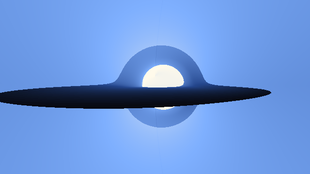

1Why Mithril
Your machine has many CPU cores and a GPU with thousands of lanes, and a plain loop uses one core. Using the rest usually means threads and locks, and with them the hard bugs: two threads update the same value at once, and the program gives a different answer from one run to the next. A GPU means rewriting the code again as CUDA kernels[16].
Mithril lets you write the program once, the plain way: functions, loops, tuples and arrays in a subset of Python, with no threads, locks or kernels. The compiler finds the work that can happen at the same time (independent calls, independent loop iterations, sums it can prove may be split), and the same source runs on one thread, every core, or an NVIDIA GPU, returning the same answer, bit for bit, on all of them. That guarantee comes from what a Mithril program is underneath: a graph of small nodes, an interaction net.
Each step replaces exactly two connected nodes and touches nothing else. Steps on different nodes share no variable to fight over, so they can run in any order, or at once, with the same result.
The idea has a long lineage, and Mithril stands on it:
- 1987Jean-Yves Girard's linear logic[2] treats every value as used exactly once.
- 1990Yves Lafont defines interaction nets[1], where every step is local.
- 1997Lafont shows that three kinds of node, the interaction combinators[3], compute anything.
- HVM, BendVictor Taelin and HigherOrder Co. make the theory run: HVM[4] evaluates interaction combinators across CPU cores and GPUs, and Bend[5] shows that ordinary-looking programs parallelize with no annotations. They also find the catch: rewriting a graph one pair of nodes at a time costs far more per step than plain machine code, and Bend 2[6] leaves nets behind to compile to C.
Mithril bets the other way: nets pay off once you change when the rewriting happens. The same rules run at two times (chapter 4):
- Compile timeEvery rewrite whose inputs are written in the source runs while compiling, the idea behind partial evaluation[8]: constants computed, small functions inlined, decided
iftests settled. These are the program's own rules applied early, not separate optimizations, so they cannot change what it means. - Run timeWhat depends on the input, such as each pixel's colour in a ray tracer, becomes ordinary machine code. The net stays only to share computed values and hand independent work to idle cores.
Mithril holds itself to the strict test: how many cores it needs to beat a good sequential C program of the same algorithm[7]. It is a research language: its core rules are proved confluent in Lean[9], every backend is checked against a reference interpreter, and its open problems (vectorizing independent work, keeping GPU lanes busy, irregular machine-learning workloads, chapter 10) are the problems nets must solve to scale.
Mithril, Bend 1 and Bend 2
| Bend 1[5] | Bend 2[6] | Mithril | |
|---|---|---|---|
| What runs | The interaction net, rewritten on HVM[4] | One generated C file, no net | Native code for input-dependent work, plus a small net |
| When the net is rewritten | At run time, every step | Not at all | Mostly at compile time; at run time only to share values and hand out work |
Cost of a + b | A rewrite: allocate, match a rule, rewire | A machine instruction | A machine instruction |
| Where parallelism comes from | The net's rules, no annotations | The generated C, not the net's rules | The net's rules, no annotations |
In short: Bend 1 keeps the nets and pays for every step; Bend 2 drops the nets and compiles to C; Mithril keeps the nets and moves the rewriting to compile time. Mithril's mechanisms are derived independently; Bend is the baseline it measures against.
2Mithril in ten minutes
If you read Python, you can already read every program in this guide. Mithril keeps Python's syntax and changes what three things mean: a value never changes once it is made, two parts of a program never share a value by changing it, and you never write a thread, a task or a device. The eight pieces below are all the syntax there is.
def fib(n):
if n < 2:
return n
return fib(n - 1) + fib(n - 2)if c > 0:
return a
return bfor i in range(n):
s = s + f(i)p = (x, y, z)
a, b, c = pmatch.@data
class L:
Nil: ()
Cons: (h, t)def stage(c):
return lambda x: x * 3 + setup(c)array_set returns a new array and leaves the old one for its readers. If no other variable still refers to the old array, array_set writes into it directly instead of copying it.a = array_new(n, 0)
a = array_set(a, i, v)f32(x) makes a value single precision and the type spreads through the arithmetic.r = sqrt(f32(d))A first program
The black hole in the header is about 800 lines of plain functions: the equations of a light ray near a spinning hole, a Runge-Kutta step, a recursive function that follows one ray until it falls in, crosses the disk or reaches the stars. Its image is made by a few loops in a row; the first fires one ray through every pixel of a strip of frames.
def main():
...
m = width() * height() * frames()
base = array_new(m, 0)
for i in range(m):
base = array_set(base, i, first_ray(i, cams, tab))
...Nothing here names a thread. Each first_ray(i, cams, tab) reads only the camera table, the colour table and its own i, so Mithril may compute the pixels in any order, on any core or on the GPU. The writes into base form a chain, but each is a single store; the cost lives in first_ray. The device and the thread count are chosen when the program runs.
The whole system
The map below follows one program from its source file to running code, top to bottom. Each box names the crate that implements it, and the § mark gives the chapter that explains it. The dashed boxes beside the main path are the checks: the reference interpreter every run is compared with, the two Lean proofs, model checking of the CPU's lock-free handoffs, and the test gates. The copper dashed box is the command that shows what the compiler did to your program. Notice that the rule table appears only once, inside compile-time reduction, and a dotted line carries it to both runtimes: the compiler, the CPU and the GPU all fire the same rules.
How Mithril reads a program
Mithril runs two calculations at once whenever neither needs the other's result. So to see where a program can run in parallel, ask three questions about its shape: which calculations can start together, which must wait for an earlier answer, and what do they share? The six problems below each have a different shape. Each animation runs the real problem and schedules it the way Mithril's runtime does: a task starts as soon as its inputs exist and a worker is free.
Rendering: every pixel on its own
A ray tracer colours a pixel by firing a ray from the camera through it, following the ray as it bounces off the mirror sphere or bends through the glass one, and adding up the light it collects. The calculation reads only the scene description and the pixel's own coordinates; no pixel needs another pixel's answer. The program loops over the image row by row, but Mithril sees that the pixel(x, y) calls are independent and hands them to whichever worker is free.
Pixels are not equal. A ray that hits the back wall stops after one shadow test, while a ray that strikes glass splits into a reflected and a refracted ray, each traced further. The tiles over the spheres below cost several times more than the tiles over the walls. With one worker the frame fills in reading order. With more, a worker that finishes a tile takes the next one in the queue, so a slow tile over the glass sphere never delays the wall tiles queued behind it.
Merge sort: split, solve, combine
Merge sort orders a list by halving it until each piece is trivially small, sorting the pieces, and merging sorted halves back together; merging two sorted lists only ever compares their front elements. The two halves of any split have separate inputs, so they can be sorted at the same time. The merges cannot start until both of their halves are sorted.
That gives the computation a diamond outline. Each split doubles the work available, so four workers are busy while the pieces sort, and each merge halves it again until the last merge runs on a single worker. The busy-worker trace under the tree shows that rise and fall.
[8, 3, 6, 1, 7, 2, 5, 4]. A coloured tag shows which worker runs each step. Sorting example.Four queens: a search that grows as it runs
The puzzle asks for every way to place four queens on a 4 × 4 board so that no two share a row, column or diagonal. A backtracking search places one queen per row. Each legal placement opens a branch for the next row, and a board with no legal square left is a dead end.
Nobody knows the shape of this tree in advance; a branch exists only once its parent has been checked. A first queen in the corner leads to a dead end a row or two later; a first queen in the second column leads all the way to a solution. Mithril starts each new board as a task the moment it appears, so a worker that finishes checking a board immediately takes one of the boards the search has just produced. The search finds the puzzle's two solutions.
Nearest neighbours: many searches, one shared map
Given a set of stored points, find the closest one to each of many query locations. A k-d tree[13] makes this fast by cutting the plane in half again and again, alternating vertical and horizontal cuts, until each cell holds a few points. A query descends to the cell containing it, then backs out and checks a neighbouring cell only if that cell could hold something closer than the best point found so far.
The tree is built once and only read afterwards. Every query walks the same tree with its own best-so-far, so queries run side by side without locks or copies. Inside one query the visits are ordered, because each one decides whether the next cell is worth opening. Queries in crowded or awkward spots visit more cells, which gives the scheduler jobs of different sizes.
Collatz: a chain no worker can shorten
The Collatz rule halves an even number and replaces an odd one with three times itself plus one. Repeat it and the numbers rise and fall like hailstones until they reach 1. Starting at 6 gives 6 → 3 → 10 → 5 → 16 → 8 → 4 → 2 → 1.
def steps(n):
count = 0
while n != 1:
if n % 2 == 0:
n = n // 2
else:
n = 3 * n + 1
count = count + 1
return countEach step needs the number the previous step produced, so the chain is strictly serial: worker 1 computes the whole chain from 6 down to 1 while workers 2, 3 and 4 sit idle. A batch of different starting numbers is a different story, because chains for 6, 7, 8 and 9 never consult each other. They run side by side, and the longest chain sets the finishing time. A loop can take either shape; the dependencies decide which.
A spinning black hole: the compiler does the heavy lifting
The video at the top of this guide is a Mithril program of about 800 lines. For every pixel it follows a ray of light backward from the camera through the curved spacetime around a black hole spinning at 0.99 of the maximum. Each ray is pushed forward by a Runge-Kutta step, again and again, until it falls through the horizon, crosses the glowing disk of gas or escapes to the stars. The colour it brings back includes the Doppler and gravitational shifts of the light.
The program's shape is simple: ten loops in a row, each filling an array (the colour table, the camera path, a first ray per pixel, extra rays at sharp edges, four blur passes for the glare, the final image). Inside a fill, pixel i reads only arrays made by earlier fills and writes only its own slot, so every pixel is an independent task. The work per pixel is very uneven, as the map below shows. A ray that hits the near side of the disk stops after about ten steps, a ray that escapes to the stars takes a few hundred, and a ray that spirals into the shadow takes more than a thousand. Idle workers take the next pixels as they finish, so the expensive rays around the shadow never hold up the cheap ones.

main returning each ray's step count.Many of the black hole's inputs are written in the source: the spin, the camera's path, the size of the disk, the image size. Mithril fires every rule that depends only on those while it compiles, and the results are large. The radius of the innermost stable orbit, a formula with three cube roots and two square roots of the spin, becomes the single constant 1.4545 inside disk and march. The spin's square 0.9801 and the camera's tilt (its cosine and sine, 0.035 and 0.99939) appear as numbers in ray. cbrt, whose loop of Newton steps runs a fixed number of times, unrolls from 4 agents into 321 with no call left inside. None of this is a separate optimizer: each step is one firing of the rules from chapter 3, the same rules the runtime fires (chapter 4). What reaches the processor is the physics that depends on the pixel, in straight-line native code.
3Why the answer never changes
The glass shader in the ray tracer traces a reflected ray and a transmitted ray, then blends their colours. Either ray may finish first; the blend waits for both.
# From glass(); surface geometry and the total-reflection branch omitted.
mirror = trace(add(p, scale(n, eps())), reflect(d, n), depth - 1)
through = trace(sub(p, scale(n, eps())), rd, depth - 1)
return add(scale(mirror, f), scale(through, 1.0 - f))The colour calculation needs both arguments. Either result may arrive first.
To see why the order cannot matter, look at how Mithril holds this program: as an interaction net. A net is made of agents (the nodes) joined by wires. Each agent has one special port, its principal port. When the principal ports of two agents are wired together, the two form an active pair, and a rule replaces the pair with a small new net, reconnecting the wires that led into it. One replacement is one step of computation.
Mithril's rules are few. An erasure agent meeting a number deletes both, because nothing uses the number. Other rules apply a function, compute an arithmetic operation, select a branch or copy a shared value to two consumers. Because two active pairs never share an agent, firing one cannot disturb another.
(2 × 3) + (4 × 5)two independent multiplications6 + (4 × 5)(2 × 3) + 206 + 20 → 26both orders meet at the same resultThat local guarantee is the diamond property, and it implies confluence: every order of reduction that finishes ends at the same net. The scheduler can fire any ready pair on any core at any moment. For Mithril's core rules the property is proved in Lean[9] (chapter 8).
One kind of change is not covered by reordering. Summing an array in chunks changes how the additions are grouped: (a + b) + c becomes a + (b + c). That is safe only when the operation is associative and has an identity, so Mithril splits a sum like this only after proving both facts for the numbers it actually uses. Integer addition passes. Floating-point addition does not, because its rounding depends on the grouping.
4One rule table at compile time and run time
A program's inputs arrive at two different times. Some are already written in the source: constants, flags, helper functions. Others, such as n in the example below, arrive only when the program runs. While compiling, Mithril fires every rule whose inputs are in the source; it keeps the rules that need run-time input for later. The program that is left after compiling, the one that actually runs, is called the residual program.
In shade(n) below, only n comes from the program's input. The flag 1, the number 3 and the two helper functions are written in the source, so the compiler evaluates pick(1, square(3), n) to 9 before the program ever runs.
def square(x):
return x * x
def pick(c, a, b):
if c > 0:
return a
return b
def shade(n):
return square(n) + pick(1, square(3), n)n. The program that actually runs is n * n + 9, the residual program. Example source.Inspect the residual and the generated Rust
MITHRIL_NET_CORE=1 target/release/mithril net examples/specialize.py
# shade = Op2(Add, Op2(Mul, Var(0), Var(0)), Num(9))
cargo run --release -p mithril-cli --example dump_gen -- \
examples/specialize.py /tmp/mithril-specialize.rsCore is the compiler’s internal expression format: Var(0) is the argument and Op2 an operation on two inputs. The example supplies 5 at run time and returns 34. The generated function:
fn s_2(fuel: &mut i64, v0: i64) -> i64 {
let fl: i64 = 1i64;
let s1: i64 = v0.wrapping_mul(v0);
let s2: i64 = s1.wrapping_add(9i64);
return s2;
}The residual n * n + 9 is two machine operations on a 64-bit register. Generated names change between compiler revisions.
Evaluating a program when part of its input is already known is called specialization[8]. The compiler does it on a work budget. If the budget runs out, the unfinished part simply stays in the residual program, and the program still means the same thing: the Lean proof covers half-reduced nets too.
For the astute reader
Folding square(3) and selecting the branch of pick is what a classical optimizing compiler already does: it folds constants, inlines small functions and removes branches whose outcome is known. That overlap is deliberate. It is the bet Mithril makes.
A classical compiler does this work in separate passes, each written by hand and each needing its own argument that it preserves the program's meaning. The order of the passes also changes the code that comes out; compiler writers call this the phase-ordering problem.
In Mithril each of those optimizations is a firing of the same interaction rules that define what the program means. The rules are confluent, so the compiler can apply them in any order and stop at any point, and the program it holds still means the same thing. Run to completion, every order produces the same residual program. For the core rules this is proved in Lean[9]; the compiler also unfolds calls whose arguments are still unknown, a rule outside the proof that is checked by comparing each program's answer before and after compile-time reduction.
Next, the compiler turns the residual program into code for the hardware, a step called lowering. The residual n * n + 9 is straight-line arithmetic, so it becomes two machine instructions on a register: no agents are allocated and no rules are dispatched. A call that opens independent work becomes a task that another core can take. A value whose consumers are still waiting for it stays in the net.
How the residual becomes native code, tasks and joins
Here is what happens when the program runs. A function that opens independent branches, like msort with its two recursive calls, starts on one worker with a work budget. When the budget runs out at a safe point, the worker pauses and offers the unfinished branches to idle workers. It leaves behind a continuation, a note of what to do when the results come back, and a join collects the results, just as the colour blend in chapter 3 waited for both rays. If compiled code needs a value the net has not produced yet, a bridge makes it wait, and results of compiled calls flow back into the waiting wires. The native code never computes anything the net would not: it is a faster way to reduce the same part of the net.
Sharing work through closures
A data pipeline is built from stages. Each stage is configured once, with a setting c read at run time, and then applied to thousands of inputs. Preparing a stage is expensive: setup(c) folds a large table from the configuration. Applying it is cheap.
def stage(c):
return lambda x: (x * 3 + setup(c)) & 1048575Written this way, a strict language recomputes setup(c) inside every call, because the expression sits in the body of the lambda. A programmer can hoist it by hand. Mithril does not need that: setup(c) depends only on the captured configuration, so the sharing rules compute it once per stage and wire the result to every application. Nothing is cached by comparing expressions; the value has one producer and many consumers.
setup(c), blue blocks the per-input work. Pipeline source.5What Mithril gives you
Deterministic
The same input gives the same output, bit for bit, on 1 thread, 16 threads, an NVIDIA GPU, x86-64 or Apple silicon. Confluent rules and immutable values leave no room for a data race or a schedule-dependent result.Parallel by construction
Independent calls, independent loop iterations and sums proved safe to split become parallel work because of how the program is built, not because you asked. The source has no threads, locks, pragmas or kernels.One source for CPU and GPU
The same file compiles to native code for CPU workers and to CUDA for an NVIDIA GPU, with one rule table and one runtime model on both. You pick the device when the program runs.Work done once
Compile-time reduction removes everything the input does not decide, and sharing rules keep closures from repeating their setup.Rendering on 1 thread, 16 threads and a GPU
A spinning black hole
1280×720, 450 frames. Kerr light rays, extra rays at sharp edges, glare. GPU rate is device time in 40-frame strips. Measurements · source.
Path tracing[12]

256×256 · 64 samples per pixel, up to 6 surface hits per path. Tracer source.
Ryzen 7 7800X3D and RTX 4090. Path tracing, 5 October 2026: FPS is warm throughput over a 24-frame batch, median of three runs. The GPU figure is device time plus reading back and writing the image, without the one-off CUDA setup; compilation excluded. All frame pixels match across CPU and GPU. Measurements and reproduction.
| One frame | Mithril 1 | Mithril 16 | GPU (warm) |
|---|---|---|---|
| Path tracing, 256×256 × 64 paths | 1.716 s | 0.175 s | 0.011 s |
| Black hole, one 1280×720 frame | 11.42 s | 1.25 s | 0.062 s |
Medians of three built-artifact runs after a warmup, same machine, 5 October 2026 (the black hole's 1-thread time is one run). Compilation excluded. Every lane writes its image with --image. GPU times are warm: device time plus reading back and writing the image, without the one-off CUDA context and memory setup (about 120 ms per process). Raw samples.
Read each row from left to right. The same unchanged source runs about nine times faster on sixteen threads than on one, and the GPU is about eleven times faster again on both scenes. Every lane returns identical pixels.
Against a sequential C program
Chapter 1 set a strict test: how many cores does Mithril need to beat a good sequential C program of the same algorithm? Here it is on a batch of nearest-neighbour queries over a shared k-d tree. On one thread Mithril runs level with C; on sixteen it is four times faster. The GPU is slower on this program, because the queries branch unpredictably and leave most lanes of each warp idle (chapter 10).
| k-d tree, 218 points and queries | Time | vs C |
|---|---|---|
| C, 1 thread | 0.372 s | 1.0× |
| Mithril, 1 thread | 0.375 s | 0.99× |
| Mithril, 16 threads | 0.089 s | 4.2× |
| Mithril, GPU (warm) | 0.617 s | 0.60× |
gcc -O2; minimum wall-clock time of five runs on 5 October 2026 (GPU: warm device time, median of three), builds excluded, outputs checked. A parallel C version has not been measured. Methods and samples.
Against Rust, on programs a general-purpose language must handle
| Program | Rust · 1 thread | Mithril 1 | Mithril 16 |
|---|---|---|---|
| Expression interpreter | 2.40 s | 1.72 s | 0.19 s |
| List merge sort and quicksort | 6.78 s | 1.58 s | 0.69 s |
| Heavily shared graph | 1.73 s | 2.54 s | 0.36 s |
| Depth-first search over adjacency lists | 0.90 s | 1.46 s | 0.27 s |
| Closures with shared setup | 0.30 s | 0.02 s | 0.02 s |
| Copy-on-write array versions | 1.01 s | 1.97 s | 1.96 s |
| Persistent map keeping old versions | 1.49 s | 1.66 s | 1.65 s |
| Serial mutual recursion | 0.30 s | 0.31 s | 0.32 s |
| Closures depending on every input | 0.01 s | 4.53 s | 4.49 s |
Exploratory corpus at e8441a9, 4 October 2026, one wall-clock sample per lane (the slower rows repeated within 0.02 s), checked against a Python oracle. The Rust twins follow the shape of the Mithril source (Rc lists, boxed closures); a hand-tuned Rust program could be faster. Design §11.1 · harness.
The wins come from two places. Recursive work spreads across cores without any code to arrange it, and sharing rules keep a closure from repeating setup that depends only on what it captured. The losses are chapter 7's subject.
6Where to use it
To decide whether Mithril fits your problem, look at the shape of the computation rather than its domain. Mithril pays off when there is plenty of independent work, each piece big enough to be worth handing to another core, and most of all when that work is irregular: you cannot know a piece's size until it runs, or the pieces read shared data that would otherwise need locks.
- Rendering and simulation batches. Ray and path tracing, per-element simulation steps, Monte Carlo sampling with hashed random numbers that reproduce exactly on any device.
- Recursive search and divide and conquer. Game-tree and constraint search, branch-and-bound, sorting and tree algorithms, where branches appear at run time and differ in size.
- Many queries over shared read-only structures. Spatial indexes, lookup tables, rule sets checked against many inputs.
- Code that needs locks elsewhere. Five programs that require locks or atomics in C and Rust are written in Mithril without either, each with C and Rust versions for comparison. Lockless programs.
- Irregular planning in machine-learning systems. Mixture-of-experts routing[17,18] (top-k gating, capacity limits, overflow), sparsity patterns and graph traversals share the k-d tree's shape: a read-only structure, partitioning and data-dependent branching, balanced by the scheduler instead of by atomics and sorts.
- Executable specifications of distributed algorithms. Ring and tree all-reduce[19] or expert all-to-all exchange are local rules on a graph. Mithril runs such an algorithm with the same rules on CPU and GPU and checks it against the oracle, as a specification and schedule simulator.
- Compiler passes and planning. A rewrite system over an intermediate representation is a rule table, and the compile-time reducer runs it.
A saved computation: the compiler-planning demo
The compiler-planning demo expresses choices about fusion, vector width, tile size and placement as a Mithril program. It saves an unfinished net, then resumes it with different orders of ready work; the viewer shows the actual reduction traces, final plans and occupied net slots, and an independent exhaustive solver checks each answer. Costs are a synthetic contract, not device timings.
python3 demos/compiler_planning/demo.py --out target/compiler-planning/demo
# Open target/compiler-planning/demo/demo.html7Where not to use it
| If you need | Why Mithril is the wrong tool today | Use instead |
|---|---|---|
| Dense matrix multiplication or attention | Scalar execution with no tensors, layouts or tensor-core lowering. | A kernel compiler or an optimized numerical library. |
| Long serial dependency chains | Each step needs the previous step's result, so a second core has no work to take, yet every step still pays for the runtime's bookkeeping. | A direct C or Rust implementation. |
| Tiny closures applied many times | Copying and reducing a closure can cost more than its arithmetic when every part depends on the new input. | Benchmark the exact shape first. |
| Shared mutable state, I/O or systems integration | Values only; the language is a compute surface without general I/O. | C or Rust around a Mithril computation. |
| SIMD or non-NVIDIA devices | CPU output is scalar: baseline x86-64, and arm64 on macOS (experimental). GPU support targets one NVIDIA device. | Tools that expose those instruction sets and devices. |
You can see these limits in chapter 5's tables. Serial mutual recursion is a chain: extra threads have nothing to take, so sixteen threads run no faster than one. Copy-on-write array versions and the persistent map keep old versions of their data alive, which forces copies, so they trail Rust at any thread count. The closure interpreter builds new work for every input and loses by two orders of magnitude. And on one thread Mithril trails sequential C on four of the seven benchmark ports in the README, by up to 2.6× on the histogram, so on those its advantage appears only once there are cores to use.
On the GPU the picture is mixed. Warm, a black-hole frame and a path-traced frame each run about eleven times faster than on sixteen CPU threads, but the k-d tree, whose queries branch unpredictably, is about 1.6 times slower than on one CPU thread. Today the GPU's sure benefit is running the same program with the same results; closing its speed gap on irregular work runs through the vectorization and per-lane work in chapter 10.
Memory needs watching too. Storage is reused when ownership allows, but keeping old versions of a value can force copies, and task records, net agents and queues all take space. A different reduction order can change peak memory even though the answer stays the same.
8Proved and checked
Some of this guide's claims are proved and some are checked by running programs. The three guarantees below are proved or model-checked. Each is stated in plain words first, then shown on an example, then bounded by what it does not cover. The compiler, the extra rules and both runtimes are checked by tests, listed at the end of the chapter.
Proof 1 · The order of rule firings cannot change the result
Take any net built from Mithril's core rules. Fire its active pairs in any order you like: one worker or sixteen, the left multiplication before the right one or after it. If one order reaches a final net, every order reaches the same final net, in the same number of steps.
Example. In (2 × 3) + (4 × 5), computing 2 × 3 first or 4 × 5 first both end at 26 after the same number of firings. The proof says this holds for every program, not just this one.
Two consequences. If one order finishes, no order runs forever. And stopping part-way is safe: a half-reduced net, such as the one the compiler leaves when its work budget runs out, still reaches the same final net. Compile-time reduction relies on this property.
How it is checked. A machine-checked proof in Lean 4[9], with no unproved steps and only Lean's standard axioms. Proof and its scope.
Scope. The proof assumes the program finishes. It covers the core rule table: erasing, copying, function application, arithmetic, branch and pattern selection, and calls. Three things sit outside it and are checked by tests: rules the implementation adds (copying a closure, arithmetic that reads an operand through a wire, and unfolding a call whose arguments are still unknown, which compile-time reduction uses); the translation from source to net, which decides whether the net's answer is the source program's answer; and the Rust and CUDA code that implements the rules. The proof says the answer is independent of order; those tests say it is the right answer.
Proof 2 · Splitting a loop into chunks gives the same total
Before the compiler splits a loop like total = total + steps(i) into chunks for different cores, it proves that the combining operation is associative and has an identity. Those two facts are what make summing the chunks and adding the partial sums equal the loop's own answer.
Example. The Collatz sum over 1 to 299,999 is split into ranges. Associativity means (a + b) + c = a + (b + c), so where the ranges are cut does not matter; the identity 0 makes an empty range harmless.
How it is checked. For each such loop the compiler writes Lean theorems for associativity and identity of that operation, and mithril prove has Lean check them. The final step, from those two facts to "independently folded chunks combine to the whole", is standard algebra and is not machine-checked here; the splitting code is checked by tests.
Not covered. Only operations the compiler can prove are split: wrapping integer addition, also elementwise over tuples. Floating-point addition is never split, because rounding depends on grouping. A loop whose operation cannot be proved stays sequential.
Check 3 · The CPU runtime's lock-free handoffs have no races
Workers hand results to each other without locks. For the small functions that do this, every possible interleaving of the threads involved was explored, and in each one a join fires exactly once and sees all its inputs, and a shared value is freed exactly once, after its last reader.
How it is checked. Model checking with loom[10], which runs the code under every thread schedule and memory ordering. It found two ordering bugs, both now fixed. Runtime protocol functions.
Not covered. This covers those protocol functions, not the whole runtime, and not the GPU engine.
Checked by running programs
The compiler, the extra rules and both runtimes are checked by comparing their answers with an independent reference interpreter that evaluates the source directly.
- Compiled code gives the interpreter's answer. Every test program runs at 1, 4 and 16 threads and with tiny work budgets that force pausing, on CPU and GPU. Parity checks.
- Compile-time reduction keeps the meaning. Each test program is evaluated before and after the compiler's reduction, and the answers must match. Specializer tests.
- The extra rules also agree in any order. 10,000 randomly generated programs, each reduced in five different orders using the production rules, all match the interpreter. Schedule test.
The GPU engine implements its rules separately from the CPU rule source, and these tests hold the two together. The verification notes list each property that is checked only by tests and not yet proved.
10Future work
The problems below are not specific to Mithril: any system that runs interaction nets has to solve them to scale. Mithril is built to make them measurable, so every change is run against a sequential C program, the reference interpreter and every backend.
Auto-vectorization of independent work
Mithril's CPU code is scalar (baseline x86-64 with no AVX or FMA, and arm64 on macOS), and independent calls such as neighbouring pixels run as separate scalar tasks. Yet the net has already proved those calls independent, which is the fact an ordinary vectorizer works hardest to establish. The next step is to group tasks that run the same function on different inputs into SIMD lanes. The same grouping matters on the GPU, where 32 lanes of a warp execute in lockstep: profiles show that on irregular programs most warp instructions run with only a few of their 32 lanes active, while regular ones such as bitonic sort fill far more.
Per-lane efficiency
On one thread Mithril still trails sequential C on most programs, so it needs several cores to pass it[7]. Closing that gap is a lowering problem: native code should use representations chosen from types instead of mirroring the net's cells, through general rules rather than per-program tuning.
One rule source for every device
The GPU engine's rules are a second implementation, held equal to the CPU's by tests. Generating both from one table, and linking that table to the Lean model, would turn a checked property into a constructed one. The Lean proof itself is still to be extended to Mithril's extended rules.
Machine-learning workloads
The planned probe is a mixture-of-experts router[17,18]: top-2 gating with capacity overflow over hashed logits, checked against a C twin on CPU and GPU, whose output is a dispatch plan of index buffers. Beyond it lies a division of labour with dense-kernel compilers, in which Mithril decides the irregular structure of a computation and the kernel compiler runs its dense math. Collective-communication algorithms as executable specifications and compiler passes as rule tables follow the same path.
Scaling the substrate
GPU startup spends tens of milliseconds creating a context, and rounds of global synchronization still serialize the device scheduler. Beyond one device, distributing a net across several GPUs or machines is an open research question; confluence says the answer will not change, and the work is to make it fast.
11Try it
Start with a computation you can check: render the tracer on one thread, sixteen threads and the GPU, and compare the images.
git clone https://github.com/maderix/mithril && cd mithril
# Drop --features gpu for a CPU-only build.
cargo build --release -p mithril-cli --features gpu
target/release/mithril run demos/cornell_whitted.py --threads 1 --image one.ppm
target/release/mithril run demos/cornell_whitted.py --threads 16 --image many.ppm
target/release/mithril run demos/cornell_whitted.py --gpu --image gpu.ppm
cmp one.ppm many.ppm && cmp one.ppm gpu.ppmThe build instructions cover the GPU requirements. The generality corpus has interpreters, persistent maps and closures to read, and the design notes record every mechanism and open obligation.
12References
- Y. Lafont. Interaction nets. Proc. 17th ACM Symposium on Principles of Programming Languages (POPL), 95–108, 1990. doi.org/10.1145/96709.96718
- J.-Y. Girard. Linear logic. Theoretical Computer Science 50(1):1–101, 1987. doi.org/10.1016/0304-3975(87)90045-4
- Y. Lafont. Interaction combinators. Information and Computation 137(1):69–101, 1997. doi.org/10.1006/inco.1997.2643
- V. Taelin and HigherOrder Co. HVM: a massively parallel evaluator for interaction combinators. github.com/HigherOrderCO/HVM
- HigherOrder Co. Bend: a massively parallel, high-level programming language (Bend 1, on HVM2). github.com/HigherOrderCO/Bend1
- HigherOrder Co. Bend 2. github.com/HigherOrderCO/bend
- F. McSherry, M. Isard and D. G. Murray. Scalability! But at what COST? 15th Workshop on Hot Topics in Operating Systems (HotOS), 2015. www.usenix.org/conference/hotos15/workshop-program/presentation/mcsherry
- N. D. Jones, C. K. Gomard and P. Sestoft. Partial Evaluation and Automatic Program Generation. Prentice Hall, 1993.
- L. de Moura and S. Ullrich. The Lean 4 theorem prover and programming language. 28th International Conference on Automated Deduction (CADE), 2021. lean-lang.org
- Tokio project. loom: concurrency permutation testing for Rust. github.com/tokio-rs/loom
- T. Whitted. An improved illumination model for shaded display. Communications of the ACM 23(6):343–349, 1980.
- J. T. Kajiya. The rendering equation. Proc. SIGGRAPH, 143–150, 1986.
- J. L. Bentley. Multidimensional binary search trees used for associative searching. Communications of the ACM 18(9):509–517, 1975.
- S. Marlow, P. Maier, H.-W. Loidl, M. K. Aswad and P. Trinder. Seq no more: better strategies for parallel Haskell. Proc. Haskell Symposium, 2010. hackage-content.haskell.org/package/parallel-3.3.0.0/docs/Control-Parallel-Strategies.html
- K. C. Sivaramakrishnan, S. Dolan, L. White, T. Kelly, S. Jaffer and A. Madhavapeddy. Retrofitting parallelism onto OCaml. Proc. ACM on Programming Languages 4 (ICFP), 2020. ocaml.org/manual/5.5/parallelism.html
- NVIDIA. CUDA C++ Programming Guide: writing CUDA kernels. docs.nvidia.com/cuda/cuda-programming-guide/02-basics/writing-cuda-kernels.html
- N. Shazeer, A. Mirhoseini, K. Maziarz, A. Davis, Q. Le, G. Hinton and J. Dean. Outrageously large neural networks: the sparsely-gated mixture-of-experts layer. ICLR, 2017. arxiv.org/abs/1701.06538
- W. Fedus, B. Zoph and N. Shazeer. Switch Transformers: scaling to trillion parameter models with simple and efficient sparsity. Journal of Machine Learning Research 23(120):1–39, 2022. arxiv.org/abs/2101.03961
- P. Patarasuk and X. Yuan. Bandwidth optimal all-reduce algorithms for clusters of workstations. Journal of Parallel and Distributed Computing 69(2):117–124, 2009.